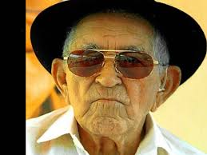

VERSOS DE PATATIVA DO ASSARÉ
Sertão, argúem te cantô,
Eu sempre tenho cantado
E ainda cantando tô,
Pruquê, meu torrão amado,
Munto te prezo, te quero
E vejo qui os teus mistéro
Ninguém sabe decifrá.
A tua beleza é tanta,
Qui o poeta canta, canta,
E inda fica o qui cantá.
(De EU E O SERTÃO - Cante lá que eu canto Cá - Filosofia de um trovador nordestino - Ed.Vozes, Petrópolis, 1982)
Saudade dentro do peito
É qual fogo de monturo
Por fora tudo perfeito,
Por dentro fazendo furo.
Há dor que mata a pessoa
Sem dó e sem piedade,
Porém não há dor que doa
Como a dor de uma saudade.
Saudade é um aperreio
Pra quem na vida gozou,
É um grande saco cheio
Daquilo que já passou.
Saudade é canto magoado
No coração de quem sente
É como a voz do passado
Ecoando no presente
Patativa do Assaré
PATATIVA DO ASSARÉ
Pássaro pequerrucho ao sol cantou
Nas terras rachadas, passos levou
Garimpando sabedoria antiga gritou
A voz da natureza por ele falou
Na lida pesada, no olho da enxada
Sina travou, com a cabeça enfestada:
Inspiração. Não comia, dormia nem nada
Só teve sossego quando escutou a danada
Futucava, avistava num botão verso escondido
Montava na cachola o viveiro de poemas entupido
Juntava quantos podia, para soltar no mundo florido
Gritava, chorrava, cantava as lágrimas do povo sofrido
Nome mudava, vida mudava e raízes no chão
Patativa era a patente maior do sertão
O que é bom é imitado, dessa ave tem de montão
Agora, Assaré é um junto consigo na certidão
Magia divina brilhava na mente do nosso Camões
Onde olhava, poesia jorrava de internos vulcões
Poesia nascia da mata, vida, dores e emoções
Na métrica, na rima, sem saber dando lições
Meses corridos aprendeu nos livros a grande lição
Orgulhoso falava, professor melhor que esse: tem não
Das aulas saí meio letrado, tinha o mundo na mão
Palavra arranjada, da viola pulava poesia pro coração
Mas, calou-se o gigante que ao mundo encantou
Assaré da patativa, com sua sabedoria profetizou
A vida foi longa, no fim, o destino sua vista levou
Descobrindo de novo, que era de si que a beleza brotou
MAGO DIONES
O Peixe
Patativa do Assaré
Tendo por berço o lago cristalino,
Folga o peixe, a nadar todo inocente,
Medo ou receio do porvir não sente,
Pois vive incauto do fatal destino.
Se na ponta de um fio longo e fino
A isca avista, ferra-a inconsciente,
Ficando o pobre peixe de repente,
Preso ao anzol do pescador ladino.
O camponês, também, do nosso Estado,
Ante a campanha eleitoral, coitado!
Daquele peixe tem a mesma sorte.
Antes do pleito, festa, riso e gosto,
Depois do pleito, imposto e mais imposto.
Pobre matuto do sertão do Norte!
Patativa do Assaré